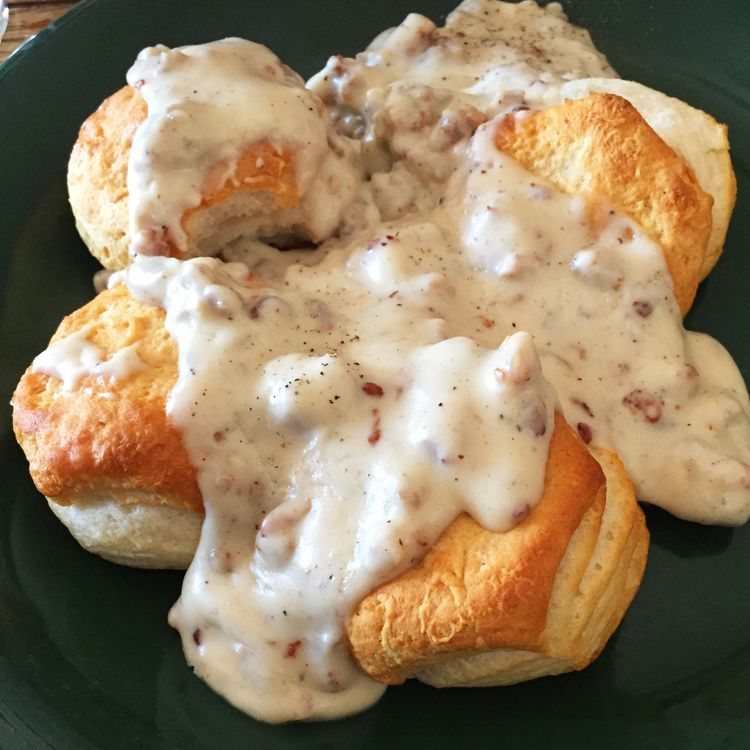

My Favorite Sausage Gravy

Description
Nothing puts a smile on my face in the morning faster than a plate
of delicious and savory sausage gravy over buttered toast. It's simple to make
and will leave you satisfied and ready for the day.
Ingredients
- 1 (12 oz) package of breakfast sausage
- 3 Tbsp butter
- 1/4 cup all-purpose flour
- 3 cups whole milk
- salt and pepper to taste
Instructions
- Cook sausage in a large skillet over medium-high heat
- Stir butter into the pan until melted
- Add flour and stir until smooth. Reduce heat to medium and cook until light brown
- Slowly add milk and stir with a whisk until thickened. Season with salt and pepper
- Reduce heat and simmer for 12 to 15 minutes. If gravy becomes too thick,
stir in a little more milk.
- Prepare bread in the toaster to desired level
- Place toast on a plate and cover with sausage gravy.
- Prepare to have the best day of your life!